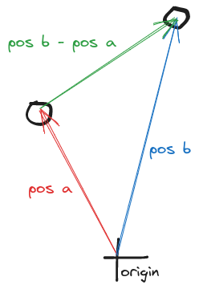
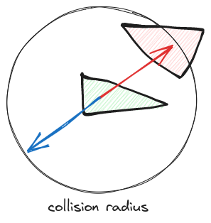

What is this website?
this is a tutorial on how to make a boid simulation using the bevy game engine written in the rust programing languge.
installation and setup
this tutorial does not cover setting up the work environment. Here are some links to get you started:
What are boids?
A boid is a "bird like object". below you can see a simulation of them all flying around.

What is ECS?
ECS stands for Entities, Components, and Systems. It is a Architecture used to make game or simulations.
You can think of a component as a trait or property. Some examples of components would be: position, velocity, direction, time, height, happiness, number of bones, or love of asparagus.
An entity is an object or thing in the world. You can think of them as a container of components. An entity has no traits or information associated with it apart from the components it has.
A System defines relationships or ways something changes over time. Examples would be how velocity changes position, how gravity changes velocity, an enemy knowing when to attack the player in a game, or when a ball should bounce off a wall
why is ECS useful?
In programming today, it is better to have composition over inheritance. Using classes and object oriented programming makes iterating on and expanding on existing code. ECS makes this easy.
This project hardly has many different entity types, so class would have probably been fine. However, they don't exist in the bevy game framework.
Creating a world
dependencies
this tells rust what dependencies we will be using for our project.
cargo.toml
[package]
name = "boids"
version = "0.1.0"
edition = "2021"
# See more keys and their definitions at https://doc.rust-lang.org/cargo/reference/manifest.html
[dependencies]
bevy = "0.10.1"
rand = "0.8.5"
chrono = "0.4.24"
[profile.dev]
opt-level = 1
[profile.dev.package."*"]
opt-level = 3
on the bottom of cargo.toml we have profile.dev and profile.dev.package."*". This tells rust how optimized we want our code to be compiled at. For all of our packages we want them to be highly optimized, so its 3. For code we write, we want it to compile fast to speed up iteration. so we set everything that isn't a package to 1.
Here is the boilerplate it starts with.
main.rs
use bevy::prelude::*; fn main() { App::new().run(); }
first we'll have a little hello world to make sure everything's working
use bevy::prelude::*; fn main() { App::new() .add_startup_system(hello_world) .run(); } fn hello_world() { println!("hello world!") }
After this run
cargo run
and you should see hello world in the terminal. It will take a long time to compile because we are compiling bevy and all the dependencies. It will only do this once. From now on it will only recompile the files we write.
Creating a camera
in order to see things we need a camera
rename the "hello_world" function. we don't need it anymore. copy the setup_camera function bellow. Although uninteresting, this is our first entity in our ecs system
use bevy::prelude::*; fn main() { App::new() .add_plugins(DefaultPlugins) .add_startup_system(setup_camera) .run(); } fn setup_camera( mut commands: Commands ) { commands.spawn(Camera2dBundle::default()); }
Creating a boid
our next step is to draw the boid on the screen.
our first step is drawing anything on the screen. our new "spawn_boids_system" with spawn an entity using a "ColorMesh2dBundle".
A bundle is nothing but a collection of components commonly used together. You can even build you own bundles (we wont be doing that). This bundle has all the components we need to get a shape on the screen.
use bevy::prelude::*; fn main() { App::new() .add_plugins(DefaultPlugins) .add_startup_system(setup_camera) .add_startup_system(spawn_boids_system) .run(); } fn setup_camera( mut commands: Commands ) { commands.spawn(Camera2dBundle::default()); } fn spawn_boids_system( mut commands: Commands, mut meshes: ResMut<Assets<Mesh>>, mut materials: ResMut<Assets<ColorMaterial>>, ){ commands.spawn( ColorMesh2dBundle { material: materials.add(ColorMaterial::from(Color::PURPLE)), mesh: meshes.add(Mesh::from(shape::Quad::default())).into(), transform: Transform { scale: Vec3::splat(100.0), ..default() }, ..default() }, ); }
for bevy to draw on the screen it needs to know:
- the material: what color to draw
- what mesh to use: what shape to draw
- and the transform: where to draw and in what rotation/scale.
"ColorMesh2dBundle" has other properties that we do not care about. we can use
..defaultto fill in the default values for the remaining feilds.
after running this with
cargo run
you should see a purple square show up on screen.
we build the square using Mesh::from(shape::Quad::default()). sadly, there is no shape for isosceles triangle that i am aware of so we will have to build our own. It is a good idea to build out mesh is a separate function:
#![allow(unused)] fn main() { ... fn create_triagle_mesh() -> Mesh { //build mesh } fn spawn_boids_system( mut commands: Commands, mut meshes: ResMut<Assets<Mesh>>, mut materials: ResMut<Assets<ColorMaterial>>, ){ commands.spawn( ColorMesh2dBundle { material: materials.add(ColorMaterial::from(Color::PURPLE)), mesh: meshes.add(create_triagle_mesh()).into(), transform: Transform { scale: Vec3::splat(100.0), ..default() }, ..default() }, ); } }
^we changed the code inside meshes.add(**)
#![allow(unused)] fn main() { ... fn create_triagle_mesh() -> Mesh { let mut mesh = Mesh::new(PrimitiveTopology::TriangleList); mesh.insert_attribute(Mesh::ATTRIBUTE_POSITION, vec![ [0.0, 0.0, 0.0], [0.0, 0.0, 0.0], [0.0, 0.0, 0.0], ]); mesh.set_indices(Some(Indices::U32(vec![0,1,2]))); mesh } ... }
in order to do this we need to import a few things from bevy at the top of our program:
#![allow(unused)] fn main() { use bevy::prelude::*; use bevy::render::{render_resource::PrimitiveTopology, mesh::Indices}; ... }
I left the coords for the mesh above as 0's. we will fill them in now

as you can see we have vertices at [0,2], [-1, -1], and [1, -1]. although we are working in 2d, all meshes in bevy are 3d. In this case all our z coords(toward and away from camera ) will be left as 0.
#![allow(unused)] fn main() { ... mesh.insert_attribute(Mesh::ATTRIBUTE_POSITION, vec![ [0.0, 2.0, 0.0], [-1.0, -1.0, 0.0], [1.0, -1.0, 0.0], ]); ... }
the reason that we need to add a decimal of 0 is to tell the compiler that these are floating point numbers and not integers. Bevy always uses f32.
the last component we need to complete our boid is a velocity vector. we will define a new component like this:
#![allow(unused)] fn main() { ... #[derive(Component)] struct Velocity(Vec3); ... }
while we only need a Vec2 for because we are only using 2 dimensions, using a Vec3 will allow us to do easier arithmetic with the translation of boids (which have to use Vec3).
then when we spawn the boid we need to add the velocity component:
#![allow(unused)] fn main() { ... #[derive(Component)] struct Velocity(Vec3); fn spawn_boids_system( mut commands: Commands, mut meshes: ResMut<Assets<Mesh>>, mut materials: ResMut<Assets<ColorMaterial>>, ){ commands.spawn(( ColorMesh2dBundle { material: materials.add(ColorMaterial::from(Color::PURPLE)), mesh: meshes.add(create_triagle_mesh()).into(), transform: Transform { scale: Vec3::splat(100.0), ..default() }, ..default() }, Velocity(Vec3{x: 0.0, y: 10.0, z: 0.0}) )); } }
^the "spawn" command only take one argument so we need to wrap our 'ColorMesh2dBundle' and 'Velocity' in a new set of parenthesis: commands.spawn((...))
our boids now has no velocity in the x direction, and 10.0 in the y. Once we add movement, it should move up by 10 units per frame.
here is our program so far:
use bevy::prelude::*; use bevy::render::{render_resource::PrimitiveTopology, mesh::Indices}; fn main() { App::new() .add_plugins(DefaultPlugins) .add_startup_system(setup_camera) .add_startup_system(spawn_boids_system) .run(); } fn setup_camera( mut commands: Commands ) { commands.spawn(Camera2dBundle::default()); } fn create_triagle_mesh() -> Mesh { let mut mesh = Mesh::new(PrimitiveTopology::TriangleList); mesh.insert_attribute(Mesh::ATTRIBUTE_POSITION, vec![ [0.0, 2.0, 0.0], [-1.0, -1.0, 0.0], [1.0, -1.0, 0.0], ]); mesh.set_indices(Some(Indices::U32(vec![0,1,2]))); mesh } #[derive(Component)] struct Velocity(Vec3); fn spawn_boids_system( mut commands: Commands, mut meshes: ResMut<Assets<Mesh>>, mut materials: ResMut<Assets<ColorMaterial>>, ){ commands.spawn(( ColorMesh2dBundle { material: materials.add(ColorMaterial::from(Color::PURPLE)), mesh: meshes.add(create_triagle_mesh()).into(), transform: Transform { scale: Vec3::splat(100.0), ..default() }, ..default() }, Velocity(Vec3{x: 0.0, y: 10.0, z: 0.0}) )); }
Creating Movement
first we will add a new system to our app:
main.rs
fn main() { App::new() .add_plugins(DefaultPlugins) .add_startup_system(setup_camera) .add_startup_system(spawn_boids_system) .add_system(movement_system) .run(); } ...
the difference between "add_system" and "add_startup_system" is that startup systems only run once when the program is launched. A regular system runs on every frame.
#![allow(unused)] fn main() { ... fn movement_system( time: Res<Time>, mut query: Query<(&mut Transform, &Velocity)> ) { for (mut transform, velocity) in query.iter_mut() { transform.translation += velocity.0 * time.delta_seconds(); } } ... }
our system needs access to the boids transform component (this was part of the "ColorMesh2dBundle" bundle) and our velocity component. we will be changing the transform component to move the boid on the screen. this is why we need it to be mutable. that is what the "mut" keyword means.
this system iterates over all boids and adds the velocity vector to the translation of the boid. here is a diagram:

the reason we use "velocity.0" instead of "velocity" is because our velocity component looks like this:
#![allow(unused)] fn main() { Velocity( Vec3 { x: f32, y: f32, z: f32, } ) }
we want to add the vector inside of the Velocity struct so we need to take our the zeroth element: the vector
the reason we multiply the velocity vector by delta seconds is so that the speed of boids is not tied to the frame rate of the program. delta seconds is the time sense the last frame finished.
if you run the program now, the triangle will move up the screen!
one problem is if we were to change the initial velocity like this:
#![allow(unused)] fn main() { Velocity(Vec3{x: 10.0, y: 10.0, z: 0.0}) }
and run the code, we will see that the triangle doesn't point to where it is headed. It only points up!
to fix this, we need to find the angle the boid should be based on its velocity.
Using trigonometry we know that tan(θ) = opposite / adjacent. so,solving for θ, our boids rotation angle should be atan(velocity.0.y/velocity.0.x)
however there is a big flaw this this approch:
with this example of θ, when we decide velocity.0.y by velocity.0.x we get exactly the same number as our previous example. indeed with this approach out boid would only be pointing up toward the top of the screen even if they were moving downward.
modern programming languages, including rust, have a solution to this. the "atan2()" function. this function will properly find the angle θ, even in the third and fourth quadrants:
#![allow(unused)] fn main() { (velocity.0.y).atan2(velocity.0.x) }
if you were to run this the our boid faces 90 degrees to the left of where its headed.
this is because it assumes that the angle zero is facing left. but when we built our mesh we made it facing up. to fix this we can rotate the angle by 90 degrees by swapping x and y (taking the reciprocal) and then making it negative:
#![allow(unused)] fn main() { (-velocity.0.x).atan2(velocity.0.y) }
to implement this in out code we will add a line that updates the boids rotation every frame:
main.rs
#![allow(unused)] fn main() { fn movement_system( time: Res<Time>, mut query: Query<(&mut Transform, &Velocity)> ) { for (mut transform, velocity) in query.iter_mut() { transform.translation += velocity.0 * time.delta_seconds(); transform.rotation = Quat::from_rotation_z((-velocity.0.x).atan2(velocity.0.y)); } } }
the rotation need a quaternion. this is just how computers store rotation its not important. we use from_rotation_z because its rotating around the z axis (toward and away the screen is the z axis).
here is our program so far:
use bevy::prelude::*; use bevy::render::{render_resource::PrimitiveTopology, mesh::Indices}; fn main() { App::new() .add_plugins(DefaultPlugins) .add_startup_system(setup_camera) .add_startup_system(spawn_boids_system) .add_system(movement_system) .run(); } fn setup_camera( mut commands: Commands ) { commands.spawn(Camera2dBundle::default()); } fn create_triagle_mesh() -> Mesh { let mut mesh = Mesh::new(PrimitiveTopology::TriangleList); mesh.insert_attribute(Mesh::ATTRIBUTE_POSITION, vec![ [0.0, 2.0, 0.0], [-1.0, -1.0, 0.0], [1.0, -1.0, 0.0], ]); mesh.set_indices(Some(Indices::U32(vec![0,1,2]))); mesh } #[derive(Component)] struct Velocity(Vec3); fn spawn_boids_system( mut commands: Commands, mut meshes: ResMut<Assets<Mesh>>, mut materials: ResMut<Assets<ColorMaterial>>, ){ commands.spawn(( ColorMesh2dBundle { material: materials.add(ColorMaterial::from(Color::PURPLE)), mesh: meshes.add(create_triagle_mesh()).into(), transform: Transform { scale: Vec3::splat(100.0), ..default() }, ..default() }, Velocity(Vec3{x: -10.0, y: -10.0, z: 0.0}) )); } fn movement_system( time: Res<Time>, mut query: Query<(&mut Transform, &Velocity)> ) { for (mut transform, velocity) in query.iter_mut() { transform.translation += velocity.0 * time.delta_seconds(); transform.rotation = Quat::from_rotation_z((-velocity.0.x).atan2(velocity.0.y)); } }
Making our boid some friends
a boid isn't a boid if its all by itself! in this part we will spawn many boids around randomly.
first we oughta make the boid smaller:
#![allow(unused)] fn main() { ... fn spawn_boids_system(... ... ColorMesh2dBundle { material: materials.add(ColorMaterial::from(Color::PURPLE)), mesh: meshes.add(create_triagle_mesh()).into(), transform: Transform { scale: Vec3::splat(10.0), ..default() }, ..default() }, ... }
we change the scale from Vec3::splat(100.0) to Vec3::splat(100.0).
the "splat" constructor creates a Vector with the same length on each side. so Vec3::splat(3.0) returns Vec3 {x: 3.0, y:3.0, z:3.0}.
we are going to need the rand crate so we will use it on the top:
#![allow(unused)] fn main() { use bevy::prelude::*; use bevy::render::{render_resource::PrimitiveTopology, mesh::Indices}; use rand::Rng; ... }
we wrap everything in a for loop to repeat 50 times. we query the window, and get its dimensions. we change the transform of every boid to a random spot within the window dimensions:
#![allow(unused)] fn main() { fn spawn_boids_system( mut commands: Commands, mut meshes: ResMut<Assets<Mesh>>, mut materials: ResMut<Assets<ColorMaterial>>, window_query: Query<&Window>, ){ let mut random_thread = rand::thread_rng(); let window = window_query.get_single().unwrap(); for _ in 0..=50 { commands.spawn(( ColorMesh2dBundle { material: materials.add(ColorMaterial::from(Color::PURPLE)), mesh: meshes.add(create_triagle_mesh()).into(), transform: Transform { scale: Vec3::splat(10.0), translation: Vec3 { x: random_thread.gen_range(-window.width()..window.width()), y: random_thread.gen_range(-window.height()..window.height()), z: 0.0, }, ..default() }, ..default() }, Velocity(Vec3{x: -10.0, y: -10.0, z: 0.0}) )); } } }
when we call rand::thread_rng() we are creating a new random number generator. for performance reasons we should only make one. every number afterword takes the last output as input.
after we have the generator, we use the .gen_range(a..b) function to pick a random number between a and b.
lets make the Velocity random as well:
#![allow(unused)] fn main() { ... Velocity(Vec3{ x: random_thread.gen_range(-1.0..1.0), y: random_thread.gen_range(-1.0..1.0), z: 0.0, }.normalize() * Vec3::splat(10.0)) ... }
this picks a random point in a cube, normalizes it so the boid all move at the same speed, then we multiply our random unit vector by 10 using splat(). 10 is the speed for our boids.
Right now all out boids slowly drift off to space and never come back. I want to make a boid that disappears off the left side of the screen reappear on the right. And the same for all sides.
we will start with another system:
... fn main() { App::new() .add_plugins(DefaultPlugins) .add_startup_system(setup_camera) .add_startup_system(spawn_boids_system) .add_system(movement_system) .add_system(wrap_around_system) .run(); } ...
every frame we check if the current boid has flew further left then the left side of the screen, then move it to the opposite side:
#![allow(unused)] fn main() { fn wrap_around_system( window_query: Query<&Window>, mut query: Query<&mut Transform> ) { let window_entity = window_query.get_single().unwrap(); let width = window_entity.width(); let height = window_entity.height(); for mut boid in query.iter_mut() { if boid.translation.x < -width / 2.0 { boid.translation.x = width / 2.0 }; } } }
and then repeat for other 3 walls:
#![allow(unused)] fn main() { fn wrap_around_system( window_query: Query<&Window>, mut query: Query<&mut Transform> ) { let window_entity = window_query.get_single().unwrap(); let width = window_entity.width(); let height = window_entity.height(); for mut boid in query.iter_mut() { if boid.translation.x < -width / 2.0 { boid.translation.x = width / 2.0 }; if boid.translation.x > width / 2.0 { boid.translation.x = -width / 2.0 }; if boid.translation.y < -height / 2.0 { boid.translation.y = height / 2.0 }; if boid.translation.y > height / 2.0 { boid.translation.y = -height / 2.0 }; } } }
here is our program so far:
use bevy::prelude::*; use bevy::render::{render_resource::PrimitiveTopology, mesh::Indices}; use rand::Rng; fn main() { App::new() .add_plugins(DefaultPlugins) .add_startup_system(setup_camera) .add_startup_system(spawn_boids_system) .add_system(movement_system) .add_system(wrap_around_system) .run(); } fn setup_camera( mut commands: Commands ) { commands.spawn(Camera2dBundle::default()); } fn create_triagle_mesh() -> Mesh { let mut mesh = Mesh::new(PrimitiveTopology::TriangleList); mesh.insert_attribute(Mesh::ATTRIBUTE_POSITION, vec![ [0.0, 2.0, 0.0], [-1.0, -1.0, 0.0], [1.0, -1.0, 0.0], ]); mesh.set_indices(Some(Indices::U32(vec![0,1,2]))); mesh } #[derive(Component)] struct Velocity(Vec3); fn spawn_boids_system( mut commands: Commands, mut meshes: ResMut<Assets<Mesh>>, mut materials: ResMut<Assets<ColorMaterial>>, window_query: Query<&Window>, ){ let mut random_thread = rand::thread_rng(); let window = window_query.get_single().unwrap(); for _ in 0..=50 { commands.spawn(( ColorMesh2dBundle { material: materials.add(ColorMaterial::from(Color::PURPLE)), mesh: meshes.add(create_triagle_mesh()).into(), transform: Transform { scale: Vec3::splat(10.0), translation: Vec3 { x: random_thread.gen_range(-window.width()..window.width()), y: random_thread.gen_range(-window.height()..window.height()), z: 0.0, }, ..default() }, ..default() }, Velocity(Vec3{ x: random_thread.gen_range(-1.0..1.0), y: random_thread.gen_range(-1.0..1.0), z: 0.0, }.normalize() * Vec3::splat(10.0)) )); } } fn movement_system( time: Res<Time>, mut query: Query<(&mut Transform, &Velocity)> ) { for (mut transform, velocity) in query.iter_mut() { transform.translation += velocity.0 * time.delta_seconds(); transform.rotation = Quat::from_rotation_z((-velocity.0.x).atan2(velocity.0.y)); } } fn wrap_around_system( window_query: Query<&Window>, mut query: Query<&mut Transform> ) { let window_entity = window_query.get_single().unwrap(); let width = window_entity.width(); let height = window_entity.height(); for mut boid in query.iter_mut() { if boid.translation.x < -width / 2.0 { boid.translation.x = width / 2.0 }; if boid.translation.x > width / 2.0 { boid.translation.x = -width / 2.0 }; if boid.translation.y < -height / 2.0 { boid.translation.y = height / 2.0 }; if boid.translation.y > height / 2.0 { boid.translation.y = -height / 2.0 }; } }
Alignment
the boids need to be able to see the boids around them in order to make decisions on how to fly.
we will start by adding a new system for our app called "flocking_system" and it will be the brains of our boids:
fn main() { App::new() .add_plugins(DefaultPlugins) .add_startup_system(setup_camera) .add_startup_system(spawn_boids_system) .add_system(movement_system) .add_system(wrap_around_system) .add_system(flocking_system) .run(); }
to start off we will try to implement Alignment.
Alignment takes the average direction of all the boids in its area and turns towards it.
so it will move from this:
to this:
here is an intuitive, yet wrong approach:
#![allow(unused)] fn main() { fn flocking_system( mut query: Query<(&Transform, &mut Velocity)> ){ for boid in query.iter_mut() { for boid_neighbour in query.iter_mut() { //find neighbours and average their velocity } //change boids velocity closer to average } } }
Error: cannot borrow query as immutable because it is also borrowed as mutable
#![allow(unused)] fn main() { error[E0502]: cannot borrow `query` as immutable because it is also borrowed as mutable --> src/main.rs:106:27 | 105 | for boid in query.iter_mut() { | ---------------- | | | mutable borrow occurs here | mutable borrow later used here 106 | for boid_neighbour in query.iter() { | ^^^^^^^^^^^^ immutable borrow occurs here }
this is because we are attempting to read data that we are also mutating. this is a big no no for the rust barrow checker.
this reason is that the first loop is activity changing boids as it goes. and that is in turn changing what the second loop is reading. This leads to undefined behavior and would not have been caught by languages other then rust.
the way that we will solve this is by only reading immutably and build a queue of changes, then at the end apply them:
#![allow(unused)] fn main() { ... fn flocking_system( mut query: Query<(Entity, &Transform, &mut Velocity)> ){ let mut queue: Vec<Intruction> = vec![]; for (boid_a, transform_a, _velocity_a) in query.iter() { for (boid_b, transform_b, velocity_b) in query.iter() { //add up neighbours velocitys }; //devide by the number of neighbours //create turn instruction //add instuction to queue }; for (boid, _transform, mut velocity) in query.iter_mut() { //apply instuctions to boids } } }
to help with this, we will create a new struct to represent one instruction, or one small push to a boid:
#![allow(unused)] fn main() { struct Intruction{ boid: Entity, direction: Vec3, factor: f32, } }
this instruction contains what boid to push, the direction of the push, and how hard to push
#![allow(unused)] fn main() { ... fn flocking_system( mut query: Query<(Entity, &Transform, &mut Velocity)> ){ let mut queue: Vec<Intruction> = vec![]; for (boid_a, transform_a, _velocity_a) in query.iter() { let position_a = transform_a.translation; let mut neighbour_count: u32 = 0; let mut average_velocity = Vec3::ZERO; for (boid_b, transform_b, velocity_b) in query.iter() { if boid_a == boid_b {continue}; let position_b = transform_b.translation; if position_a.distance(position_b) < VISION { neighbour_count += 1; average_velocity += velocity_b.0; }; }; if neighbour_count == 0 {continue}; average_velocity /= Vec3::splat(neighbour_count as f32); let instruction = Intruction { boid: boid_a, direction: average_velocity, factor: 0.2, }; queue.push(instruction); }; for (boid, _transform, mut velocity) in query.iter_mut() { for instruction in queue.iter() { if instruction.boid != boid {continue}; let speed = velocity.0.length(); velocity.0 += instruction.direction * Vec3::splat(instruction.factor); velocity.0 = velocity.0.normalize() * speed; } } } }
lets take out some constants to the top of our page so they are easy to change later:
use bevy::prelude::*;
use bevy::render::{render_resource::PrimitiveTopology, mesh::Indices};
use rand::Rng;
const BOID_SPEED: f32 = 90.0;
const BOID_VISION: f32 = 80.0;
const ALIGNMENT_FORCE: f32 = 0.2;
here is our code whole after the constant are in:
use bevy::prelude::*; use bevy::render::{render_resource::PrimitiveTopology, mesh::Indices}; use rand::Rng; const BOID_SPEED: f32 = 90.0; const BOID_VISION: f32 = 80.0; const ALIGNMENT_FORCE: f32 = 0.2; fn main() { App::new() .add_plugins(DefaultPlugins) .add_startup_system(setup_camera) .add_startup_system(spawn_boids_system) .add_system(movement_system) .add_system(wrap_around_system) .add_system(flocking_system) .run(); } fn setup_camera( mut commands: Commands ) { commands.spawn(Camera2dBundle::default()); } fn create_triagle_mesh() -> Mesh { let mut mesh = Mesh::new(PrimitiveTopology::TriangleList); mesh.insert_attribute(Mesh::ATTRIBUTE_POSITION, vec![ [0.0, 2.0, 0.0], [-1.0, -1.0, 0.0], [1.0, -1.0, 0.0], ]); mesh.set_indices(Some(Indices::U32(vec![0,1,2]))); mesh } #[derive(Component)] struct Velocity(Vec3); fn spawn_boids_system( mut commands: Commands, mut meshes: ResMut<Assets<Mesh>>, mut materials: ResMut<Assets<ColorMaterial>>, window_query: Query<&Window>, ){ let mut random_thread = rand::thread_rng(); let window = window_query.get_single().unwrap(); for _ in 0..=50 { commands.spawn(( ColorMesh2dBundle { material: materials.add(ColorMaterial::from(Color::PURPLE)), mesh: meshes.add(create_triagle_mesh()).into(), transform: Transform { scale: Vec3::splat(10.0), translation: Vec3 { x: random_thread.gen_range(-window.width()..window.width()), y: random_thread.gen_range(-window.height()..window.height()), z: 0.0, }, ..default() }, ..default() }, Velocity(Vec3{ x: random_thread.gen_range(-1.0..1.0), y: random_thread.gen_range(-1.0..1.0), z: 0.0, }.normalize() * Vec3::splat(BOID_SPEED)) )); } } fn movement_system( time: Res<Time>, mut query: Query<(&mut Transform, &Velocity)> ) { for (mut transform, velocity) in query.iter_mut() { transform.translation += velocity.0 * time.delta_seconds(); transform.rotation = Quat::from_rotation_z((-velocity.0.x).atan2(velocity.0.y)); } } fn wrap_around_system( window_query: Query<&Window>, mut query: Query<&mut Transform> ) { let window_entity = window_query.get_single().unwrap(); let width = window_entity.width(); let height = window_entity.height(); for mut boid in query.iter_mut() { if boid.translation.x < -width / 2.0 { boid.translation.x = width / 2.0 }; if boid.translation.x > width / 2.0 { boid.translation.x = -width / 2.0 }; if boid.translation.y < -height / 2.0 { boid.translation.y = height / 2.0 }; if boid.translation.y > height / 2.0 { boid.translation.y = -height / 2.0 }; } } struct Intruction{ boid: Entity, direction: Vec3, factor: f32, } fn flocking_system( mut query: Query<(Entity, &Transform, &mut Velocity)> ){ let mut queue: Vec<Intruction> = vec![]; for (boid_a, transform_a, _velocity_a) in query.iter() { let position_a = transform_a.translation; let mut neighbour_count: u32 = 0; let mut average_velocity = Vec3::ZERO; for (boid_b, transform_b, velocity_b) in query.iter() { if boid_a == boid_b {continue}; let position_b = transform_b.translation; if position_a.distance(position_b) < BOID_VISION { neighbour_count += 1; average_velocity += velocity_b.0; }; }; if neighbour_count == 0 {continue}; average_velocity /= Vec3::splat(neighbour_count as f32); let instruction = Intruction { boid: boid_a, direction: average_velocity, factor: ALIGNMENT_FORCE, }; queue.push(instruction); }; for (boid, _transform, mut velocity) in query.iter_mut() { for instruction in queue.iter() { if instruction.boid != boid {continue}; let speed = velocity.0.length(); velocity.0 += instruction.direction * Vec3::splat(instruction.factor); velocity.0 = velocity.0.normalize() * speed; } } }
Cohesion
cohesion is the force that pulls the boids together. it takes the average position of all the boids around it and point tward that.


Now that we have our system for reading the boid's neighbours and changing it's velocity, it will be quite east to implement the other 2 forces
first lets add a new constant
#![allow(unused)] fn main() { ... const BOID_SPEED: f32 = 90.0; const BOID_VISION: f32 = 80.0; const ALIGNMENT_FORCE: f32 = 0.2; const COHESION_FORCE: f32 = 0.2; ... }
then in our flocking system we count up and divide to get the average neighbour position.
#![allow(unused)] fn main() { ... for (boid_a, transform_a, _velocity_a) in query.iter() { let position_a = transform_a.translation; let mut neighbour_count: u32 = 0; let mut average_velocity = Vec3::ZERO; let mut average_neighbour_position = Vec3::ZERO; for (boid_b, transform_b, velocity_b) in query.iter() { if boid_a == boid_b {continue}; let position_b = transform_b.translation; if position_a.distance(position_b) < BOID_VISION { neighbour_count += 1; average_velocity += velocity_b.0; average_neighbour_position += position_b }; }; if neighbour_count == 0 {continue}; average_velocity /= Vec3::splat(neighbour_count as f32); average_neighbour_position /= Vec3::splat(neighbour_count as f32); ... }; }
to find a vector between two points, all we gotta do is subtract one position from another:

as you can see, the vector posb - posa gives us a vector from the point and b.
That is the vector we will put in our instruction.
#![allow(unused)] fn main() { fn flocking_system( mut query: Query<(Entity, &Transform, &mut Velocity)> ){ let mut queue: Vec<Intruction> = vec![]; for (boid_a, transform_a, _velocity_a) in query.iter() { let position_a = transform_a.translation; let mut neighbour_count: u32 = 0; let mut average_velocity = Vec3::ZERO; let mut average_neighbour_position = Vec3::ZERO; for (boid_b, transform_b, velocity_b) in query.iter() { if boid_a == boid_b {continue}; let position_b = transform_b.translation; if position_a.distance(position_b) < BOID_VISION { neighbour_count += 1; average_velocity += velocity_b.0; average_neighbour_position += position_b }; }; if neighbour_count == 0 {continue}; average_velocity /= Vec3::splat(neighbour_count as f32); average_neighbour_position /= Vec3::splat(neighbour_count as f32); let towards_neighbours = average_neighbour_position - position_a; let alignment = Intruction { boid: boid_a, direction: average_velocity, factor: ALIGNMENT_FORCE, }; queue.push(alignment); let cohesion = Intruction { boid: boid_a, direction: towards_neighbours, factor: COHESION_FORCE, }; queue.push(cohesion); }; for (boid, _transform, mut velocity) in query.iter_mut() { for instruction in queue.iter() { if instruction.boid != boid {continue}; let speed = velocity.0.length(); velocity.0 += instruction.direction * Vec3::splat(instruction.factor); velocity.0 = velocity.0.normalize() * speed; } } } }
^I also renamed "instruction" to "alignment" to be more readable.
here is our program so far:
use bevy::prelude::*; use bevy::render::{render_resource::PrimitiveTopology, mesh::Indices}; use rand::Rng; const BOID_SPEED: f32 = 90.0; const BOID_VISION: f32 = 80.0; const ALIGNMENT_FORCE: f32 = 0.2; const COHESION_FORCE: f32 = 0.2; fn main() { App::new() .add_plugins(DefaultPlugins) .add_startup_system(setup_camera) .add_startup_system(spawn_boids_system) .add_system(movement_system) .add_system(wrap_around_system) .add_system(flocking_system) .run(); } fn setup_camera( mut commands: Commands ) { commands.spawn(Camera2dBundle::default()); } fn create_triagle_mesh() -> Mesh { let mut mesh = Mesh::new(PrimitiveTopology::TriangleList); mesh.insert_attribute(Mesh::ATTRIBUTE_POSITION, vec![ [0.0, 2.0, 0.0], [-1.0, -1.0, 0.0], [1.0, -1.0, 0.0], ]); mesh.set_indices(Some(Indices::U32(vec![0,1,2]))); mesh } #[derive(Component)] struct Velocity(Vec3); fn spawn_boids_system( mut commands: Commands, mut meshes: ResMut<Assets<Mesh>>, mut materials: ResMut<Assets<ColorMaterial>>, window_query: Query<&Window>, ){ let mut random_thread = rand::thread_rng(); let window = window_query.get_single().unwrap(); for _ in 0..=50 { commands.spawn(( ColorMesh2dBundle { material: materials.add(ColorMaterial::from(Color::PURPLE)), mesh: meshes.add(create_triagle_mesh()).into(), transform: Transform { scale: Vec3::splat(10.0), translation: Vec3 { x: random_thread.gen_range(-window.width()..window.width()), y: random_thread.gen_range(-window.height()..window.height()), z: 0.0, }, ..default() }, ..default() }, Velocity(Vec3{ x: random_thread.gen_range(-1.0..1.0), y: random_thread.gen_range(-1.0..1.0), z: 0.0, }.normalize() * Vec3::splat(BOID_SPEED)) )); } } fn movement_system( time: Res<Time>, mut query: Query<(&mut Transform, &Velocity)> ) { for (mut transform, velocity) in query.iter_mut() { transform.translation += velocity.0 * time.delta_seconds(); transform.rotation = Quat::from_rotation_z((-velocity.0.x).atan2(velocity.0.y)); } } fn wrap_around_system( window_query: Query<&Window>, mut query: Query<&mut Transform> ) { let window_entity = window_query.get_single().unwrap(); let width = window_entity.width(); let height = window_entity.height(); for mut boid in query.iter_mut() { if boid.translation.x < -width / 2.0 { boid.translation.x = width / 2.0 }; if boid.translation.x > width / 2.0 { boid.translation.x = -width / 2.0 }; if boid.translation.y < -height / 2.0 { boid.translation.y = height / 2.0 }; if boid.translation.y > height / 2.0 { boid.translation.y = -height / 2.0 }; } } struct Intruction{ boid: Entity, direction: Vec3, factor: f32, } fn flocking_system( mut query: Query<(Entity, &Transform, &mut Velocity)> ){ let mut queue: Vec<Intruction> = vec![]; for (boid_a, transform_a, _velocity_a) in query.iter() { let position_a = transform_a.translation; let mut neighbour_count: u32 = 0; let mut average_velocity = Vec3::ZERO; let mut average_neighbour_position = Vec3::ZERO; for (boid_b, transform_b, velocity_b) in query.iter() { if boid_a == boid_b {continue}; let position_b = transform_b.translation; if position_a.distance(position_b) < BOID_VISION { neighbour_count += 1; average_velocity += velocity_b.0; average_neighbour_position += position_b }; }; if neighbour_count == 0 {continue}; average_velocity /= Vec3::splat(neighbour_count as f32); average_neighbour_position /= Vec3::splat(neighbour_count as f32); let towards_neighbours = average_neighbour_position - position_a; let alignment = Intruction { boid: boid_a, direction: average_velocity, factor: ALIGNMENT_FORCE, }; queue.push(alignment); let cohesion = Intruction { boid: boid_a, direction: towards_neighbours, factor: COHESION_FORCE, }; queue.push(cohesion); }; for (boid, _transform, mut velocity) in query.iter_mut() { for instruction in queue.iter() { if instruction.boid != boid {continue}; let speed = velocity.0.length(); velocity.0 += instruction.direction * Vec3::splat(instruction.factor); velocity.0 = velocity.0.normalize() * speed; } } }
Separation
after our last section, our boid would all turn towards each other and face the same way, but they all ended up merging into the same space. the separation force pulls the boids apart when they get too close.

to start we will add two more constants:
#![allow(unused)] fn main() { const BOID_SPEED: f32 = 150.0; const BOID_VISION: f32 = 80.0; const BOID_COLLISION_RADIUS: f32 = 30.0; const ALIGNMENT_FORCE: f32 = 0.2; const COHESION_FORCE: f32 = 0.2; const SEPERAION_FORCE: f32 = 0.3; }
this one is the easiest to implement because we don't need to take any averages.
we already know to move boid a towards boid b we would do posb - posa. To move it away we just invert the vector. So -(posb - posa) or posa - posb
here is the implementation:
#![allow(unused)] fn main() { ... for (boid_b, transform_b, velocity_b) in query.iter() { if boid_a == boid_b {continue}; let position_b = transform_b.translation; if position_a.distance(position_b) < BOID_VISION { neighbour_count += 1; average_velocity += velocity_b.0; average_neighbour_position += position_b }; if position_a.distance(position_b) < BOID_COLLISION_RADIUS { let away_vector = position_a - position_b; let seperation = Intruction { boid: boid_a, direction: away_vector, factor: SEPERAION_FORCE, }; queue.push(seperation); } }; ... }
bibliography
Demšar, & Lebar Bajec, I. (2014). Simulated Predator Attacks on Flocks: A Comparison of Tactics. Artificial Life, 20(3), 343–359. https://doi.org/10.1162/ARTL_a_00135
Niizato, Sakamoto, K., Mototake, Y.-I., Murakami, H., Tomaru, T., Hoshika, T., & Fukushima, T. (2020). Finding continuity and discontinuity in fish schools via integrated information theory. PloS One, 15(2), e0229573–e0229573. https://doi.org/10.1371/journal.pone.0229573
Joydip Kanjilal. Entity Framework Tutorial - Second Edition. Packt Publishing, 2015. EBSCOhost, search.ebscohost.com/login.aspx?direct=true&AuthType=ip&db=e000xna&AN=1056283&site=ehost-live&scope=site.